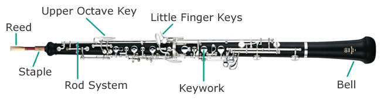

The Oboe
The oboe is a member of the woodwind family (flute, oboe, clarinet, saxophone, bassoon) The English word "oboe" is a corruption of the French word for oboe, hautbois, which is a compound word made of haut meaning "high" and bois, meaning "wood." The oboe can often be heard cutting through the texture of the orchestra because of its penetrating sound caused by its conical bore (compared to the cylindrical bore of flutes and clarinets). The oboe family consists of the double reed instruments: oboe, cor anglais (english horn), and bassoon. In the orchestra, the oboe is located in the front row of winds and brass, usually in the middle. In full symphony orchestras, the oboe will give the tuning pitch (A4) to the orchestra.
Jokes
How many oboists does it take to change a lightbulb?
Only one, but they'll go through thirty or forty to find the best one.